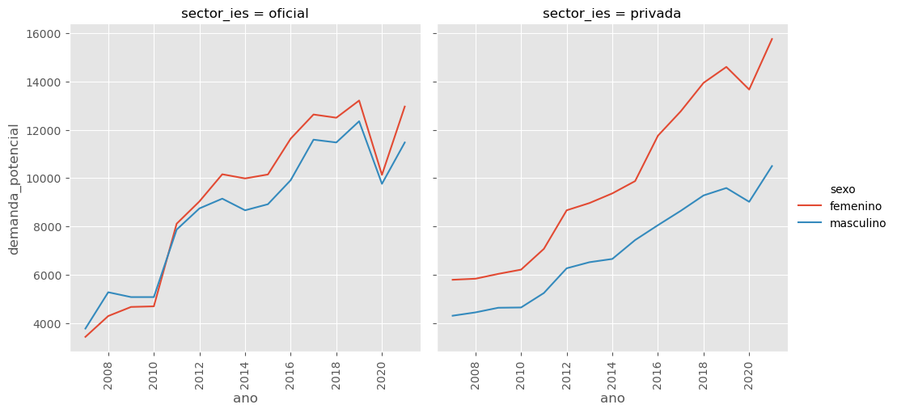
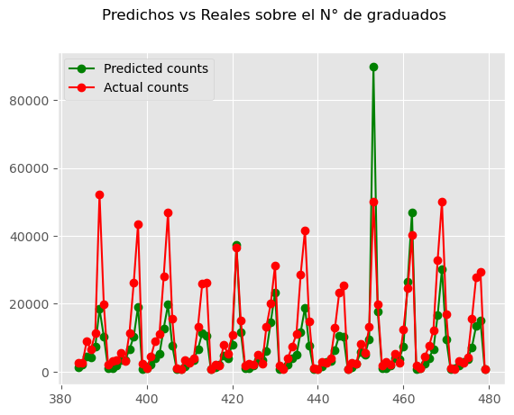
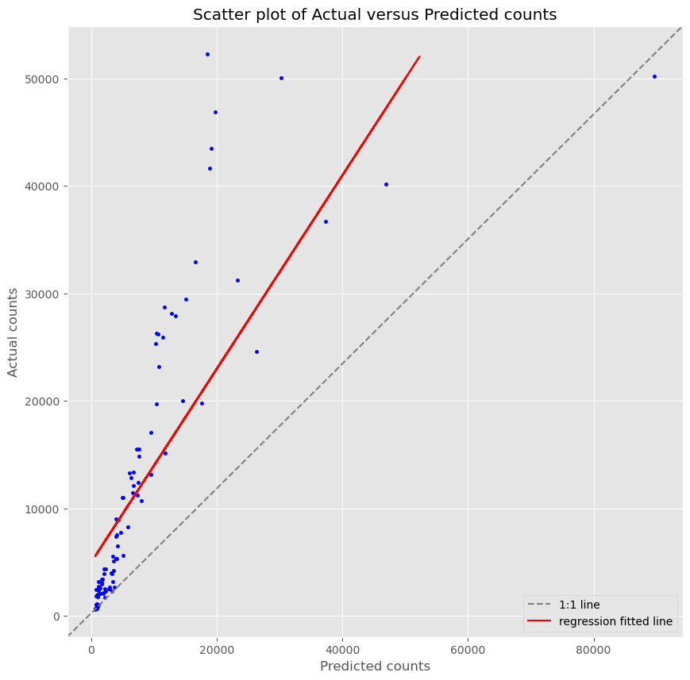

Untitled
Lectura de los datos
Librerias necesarias
Se leen los datos de la agrupación total que contiene:
- n° de inscritos
- n° de admitidos
- n° de graduados
Antes de analizar los datos, necesitamos observar que el conteo a utilizar como variable de respuesta \(Y\) cumplan con el supuesto que la media (nuestro parametro \(\lambda\)) sea constante, es decir que los valores varien frente a una valor
Una vez se agruparon los datos por las variables pertinetes tenemos que nuestra nueva BD es:
| ano | sector_ies | sexo | area_de_conocimiento | demanda_real | admitidos | demanda_potencial | |
|---|---|---|---|---|---|---|---|
| 0 | 2007 | oficial | femenino | agronomia veterinaria afines | 6388 | 2371 | 706 |
| 1 | 2007 | oficial | femenino | bellas artes | 6425 | 1392 | 399 |
| 2 | 2007 | oficial | femenino | ciencias educacion | 32780 | 16150 | 4832 |
| 3 | 2007 | oficial | femenino | ciencias salud | 55169 | 6975 | 2982 |
| 4 | 2007 | oficial | femenino | ciencias sociales humanas | 42506 | 12549 | 4073 |
Ahora se precede a graficar los datos del conteo de la variable de respuesta (demanda potencial) por algún tipo de varible a agrupar, en este caso se toma por sexo según el caracter de la IES.
Code

Se puede notar que en los dos casos ninguno cuenta con media constante.
Partición de los datos
se crean los datos de entramiento y test de los datos, teniendo en cuenta que estos se parten de forma secuencial, se toma el 80% de los datos de arriba hacia abajo dejando el 20% al conjunto de testeo.
Code
Training data set length=384
Testing data set length=96Ahora creamos la formula para aplicar al modelo:
Se ajusta el modelo con las matrices de diseño creadas:
Code
Generalized Linear Model Regression Results
==============================================================================
Dep. Variable: demanda_potencial No. Observations: 384
Model: GLM Df Residuals: 361
Model Family: Poisson Df Model: 22
Link Function: Log Scale: 1.0000
Method: IRLS Log-Likelihood: -1.1207e+05
Date: Mon, 03 Apr 2023 Deviance: 2.2024e+05
Time: 17:49:47 Pearson chi2: 2.23e+05
No. Iterations: 6 Pseudo R-squ. (CS): 1.000
Covariance Type: nonrobust
=====================================================================================================================================
coef std err z P>|z| [0.025 0.975]
-------------------------------------------------------------------------------------------------------------------------------------
Intercept 7.0653 0.005 1474.271 0.000 7.056 7.075
ano[T.2008] 0.0793 0.004 21.553 0.000 0.072 0.086
ano[T.2009] 0.0917 0.004 25.087 0.000 0.085 0.099
ano[T.2010] 0.0950 0.004 26.054 0.000 0.088 0.102
ano[T.2011] 0.2636 0.003 75.737 0.000 0.257 0.270
ano[T.2012] 0.3617 0.003 107.017 0.000 0.355 0.368
ano[T.2013] 0.2684 0.003 79.135 0.000 0.262 0.275
ano[T.2014] 0.3094 0.003 91.850 0.000 0.303 0.316
ano[T.2015] 0.1981 0.003 57.503 0.000 0.191 0.205
ano[T.2016] 0.2666 0.003 78.139 0.000 0.260 0.273
ano[T.2017] 0.4248 0.003 126.928 0.000 0.418 0.431
ano[T.2018] 0.6192 0.003 192.047 0.000 0.613 0.626
ano[T.2019] 2.526e-18 2.77e-18 0.911 0.363 -2.91e-18 7.96e-18
ano[T.2020] 5.587e-16 8.59e-19 650.488 0.000 5.57e-16 5.6e-16
ano[T.2021] 4.164e-16 3.14e-18 132.422 0.000 4.1e-16 4.23e-16
sector_ies[T.privada] -0.1501 0.002 -78.333 0.000 -0.154 -0.146
sexo[T.masculino] -0.1848 0.001 -155.740 0.000 -0.187 -0.183
area_de_conocimiento[T.bellas artes] 0.5290 0.005 109.142 0.000 0.520 0.539
area_de_conocimiento[T.ciencias educacion] 1.1245 0.004 255.294 0.000 1.116 1.133
area_de_conocimiento[T.ciencias salud] 1.2038 0.004 269.996 0.000 1.195 1.213
area_de_conocimiento[T.ciencias sociales humanas] 1.5723 0.004 372.737 0.000 1.564 1.581
area_de_conocimiento[T.economia administracion contaduria afines] 1.7319 0.004 390.846 0.000 1.723 1.741
area_de_conocimiento[T.ingenieria arquitectura urbanismo afines] 1.5725 0.004 356.648 0.000 1.564 1.581
area_de_conocimiento[T.matematicas ciencias naturales] -0.2721 0.006 -45.990 0.000 -0.284 -0.260
demanda_real -3.406e-06 2.8e-08 -121.664 0.000 -3.46e-06 -3.35e-06
admitidos 2.112e-05 6.2e-08 340.669 0.000 2.1e-05 2.12e-05
=====================================================================================================================================Predicciones
Code
poisson_predictions = poisson_training_results.get_prediction(X_test)
poisson_predictions2 = poisson_training_results.get_prediction(X_train)
#summary_frame() returns a pandas DataFrame
predictions_summary_frame = poisson_predictions.summary_frame()
rmse_test = np.sqrt(np.sum((poisson_predictions.predicted_mean-y_test.demanda_potencial.to_numpy())**2)/192)
print("RMSE de test: ",rmse_test)
rmse_train = np.sqrt(np.sum((poisson_predictions2.predicted_mean-y_train.demanda_potencial.to_numpy())**2)/768)
print("RMSE de train: ",rmse_train)
print("Error de Predicción: ",rmse_train-rmse_test)
print(predictions_summary_frame)RMSE de test: 6542.811493441338
RMSE de train: 1453.3195655737834
Error de Predicción: -5089.491927867554
mean mean_se mean_ci_lower mean_ci_upper
384 1287.360892 6.184573 1275.296240 1299.539680
385 2149.542340 8.724712 2132.510056 2166.710660
386 4336.233690 15.004576 4306.924761 4365.742069
387 4160.036441 14.425793 4131.858272 4188.406777
388 7334.880902 23.297815 7289.359866 7380.686211
.. ... ... ... ...
475 3555.573417 12.489072 3531.179351 3580.136002
476 7206.181735 22.797104 7161.638468 7251.002048
477 13463.009286 42.819470 13379.345704 13547.196031
478 15002.050470 56.074701 14892.547672 15112.358426
479 672.141019 3.583117 665.154800 679.200616
[96 rows x 4 columns]Verificación de los valores reales vs los predichos
Code
#Mlot the predicted counts versus the actual counts for the test data.
predicted_counts=predictions_summary_frame['mean']
actual_counts = y_test['demanda_potencial']
fig = plt.figure()
fig.suptitle('Predichos vs Reales sobre el N° de graduados')
predicted, = plt.plot(X_test.index, predicted_counts, 'go-', label='Predicted counts')
actual, = plt.plot(X_test.index, actual_counts, 'ro-', label='Actual counts')
plt.legend(handles=[predicted, actual])
plt.show()
Grafico de puntos reales vs predichos
Code
# Linear regression
m, b = np.polyfit(predicted_counts,actual_counts, 1)
#Show scatter plot of Actual versus Predicted counts
fig, ax = plt.subplots(figsize=(10, 10))
ax.scatter(x=predicted_counts, y=actual_counts, marker='.', color = "blue")
ax.plot((0, 1), (0, 1), color = "gray", transform=ax.transAxes, ls = '--', label="1:1 line")
ax.plot(actual_counts, m*actual_counts+b, color = "red", label = "regression fitted line")
ax.set(ylabel ="Actual counts", xlabel = "Predicted counts",
title="Scatter plot of Actual versus Predicted counts")
plt.legend()
plt.show()